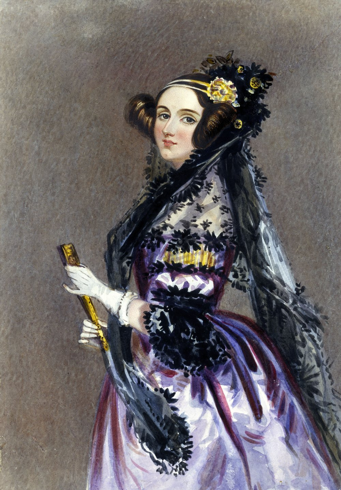

Ada Lovelace
A Vida de Ada Lovelace
.Origens Familiares: Ada Lovelace era filha de Lord Byron, um poeta romântico famoso, e Annabella Milbanke, uma matemática e escritora. Seus pais se separaram logo após seu nascimento, e sua mãe encorajou seu interesse pela matemática e pela ciência, acreditando que isso a afastaria das tendências artísticas de seu pai.
.Mentoria de Charles Babbage: Ada Lovelace conheceu Charles Babbage, um inventor e matemático, em uma festa em 1833. Eles desenvolveram uma amizade intelectual e trabalharam juntos na Máquina Analítica de Babbage, uma máquina concebida como um dispositivo mecânico programável que antecipava os princípios da computação moderna.
Descobertas de Ada Lovelace
. Notas sobre a Máquina Analítica: Ada Lovelace é mais conhecida por suas "Notas" sobre a Máquina Analítica de Babbage, escritas em 1843. Essas notas incluíam uma explicação detalhada do funcionamento da máquina e um exemplo de um algoritmo destinado a ser executado nela. Esse algoritmo é frequentemente considerado o primeiro programa de computador.
. Visão Além da Máquina: O que torna as contribuições de Ada Lovelace únicas é que ela não apenas viu a Máquina Analítica como uma máquina de cálculo, mas também reconheceu seu potencial para processar não apenas números, mas também símbolos e texto. Ela antecipou o conceito de programação de computadores e sua aplicação em várias áreas, incluindo música e arte.

Legado
. Ada Lovelace faleceu precocemente, aos 36 anos, devido a câncer uterino em 27 de novembro de 1852. Seu trabalho foi redescoberto no século XX, e ela é agora amplamente reconhecida como uma das figuras mais influentes no campo da ciência da computação e da programação de computadores. O "Dia de Ada Lovelace" é comemorado em sua homenagem em todo o mundo, reconhecendo sua contribuição à tecnologia.

Livros
- Ada's Algorithm: How Lord Byron's Daughter Ada Lovelace Launched the Digital Age
- Ada Lovelace: The Making of a Computer Scientist
- The Thrilling Adventures of Lovelace and Babbage: The (Mostly) True Story of the First Computer
Referências Bibliográficas
- Lovelace, Ada. "A primeira programadora da histótia". Derivando a Matemática"
- Lovelace, Ada. "Notes on the Analytical Engine of Charles Babbage." (1843). Espaço do conhecimento"